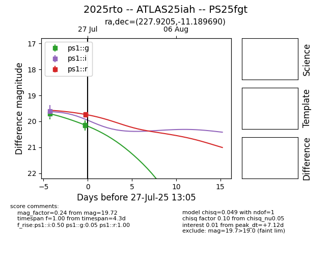

Target 2025rto at 2025-08-06 04:12, see:
TNS: wis-tns.org/object/2025rto
YSE: ziggy.ucolick.org/yse/transient_detail/2025rto
alt names
2025rto (yse,tns)
ATLAS25iah (atlas)
PS25fgt (panstarrs)
coordinates:
equatorial (ra, dec) = (227.9205,-11.18969)
galactic (l, b) = (349.2141,+38.76706)
photometry
last ps1::g=20.16, ps1::i=19.58, ps1::r=19.74
3 ps1::g, 1 ps1::i, 2 ps1::r detections
